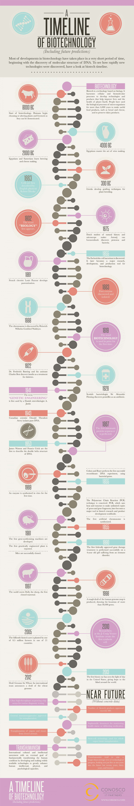
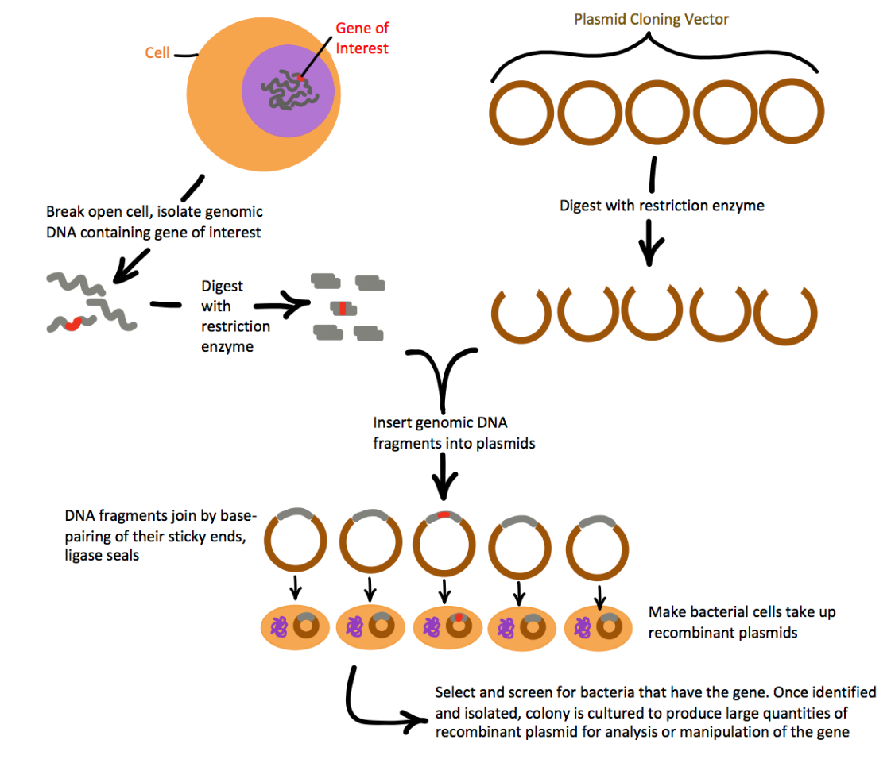
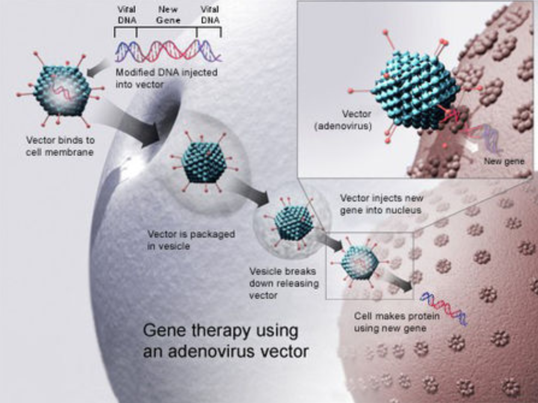

Over the course of a few decades humans have accomplished many tasks that once seemed impossible. From exploring the depths of the sea, to unveiling the secrets of other planets, we are currently experiencing an unprecedented growth in information. From these developments, one of the most notable fields to emerge is Biomedical Engineering (BME), a branch of science that specifically aims to perform detailed study on the basic blocks of living organisms. Since the Second World War, where the need for technology in medicine reached its peak (e.g., medical instrumentation such as X-rays), medical technology has been slowly integrated into the daily lives of pharmacists, physicians, and surgeons.

Advancements in the field have allowed us to take a deeper glance at our genetic composition. Look at yourself right now. You have certain unique traits: height, eye colours, personality, and so on. But how much of yourself is pre-determined from birth, attributed to your genes? What if someone could predict exactly what your personality, interests, and appearance will be BEFORE you are even born? Furthermore, what if your whole life could be changed by getting rid of some “bad codes”? In order to address these considerations, we must first have a clear understanding of what BME entails.
Biomedical engineering, a relatively new branch of science, studies and manipulates the genetic codes that generally determine inherent traits (height, eye colour, etc.). Humans, like every other living organism, are defined by their DNA. These DNA have specific sequences of nucleotide base pairs that differ from one organism to another, within or between species. These different sequences make up your genetic code; they act as a set of instructions for making you -- you. In essence, by modifying the right sequences in your DNA, scientists are able to change the traits that those sequences encode. Today, the products of BME are ubiquitous, ranging from genetically modified organisms (GMOs) to clones and much more in between.
BME encompasses a multitude of different focuses, but this article will be explore two of the specific branches within BME: Bioinformatics and genetic engineering. Bioinformatics integrates computer science with Biology by using rapid sequencing, which is a process in which scientists identify millions of DNA base pairs. Then, different genomes (complete sets of DNA) are compared in an attempt to identify the roles of specific sequences. Genetic engineering cuts, rearranges, and exchanges certain genes between organisms (or inserting lab-synthesized genes) by using specific types of enzymes. Genetic recombination is a process in which one part of an organism’s DNA is cut, then replaced with another DNA segment, either from the same organism or from a different organism. This allows scientists to combine DNA sequences from different organisms, so that a newly formed organism sometimes exhibits multiple desired traits. GMOs are one example of a successful genetic recombination event. It is worth noting that explorations of BME, like many other fields, initially developed from specific desires: the desire of surgeons to bypass the heart, the need for replacement organs, the requirement for life support in space, and many more [1].
A common goal of Bioinformatics work is to sequence genomes of different species and compare them to identify the relationship between a certain sequence to an exhibited trait. The first ever genome sequence was completed on Haemophilus influenzae bacteria in 1995 [2]. We have since developed more efficient sequencing techniques, which allow us to sequence billions of bases easier and faster than ever before. In 2003, the first ever human genome was sequenced. Quite interestingly, while human DNA sequences are 99.9% identical to each other, the 0.1% of variation is expected to provide many of the clues to the genetic risk for common illnesses [3]. A large part of Bioinformatics involves sequencing genomes from different organisms and compiling those sequences into databases. These databases can then be referred to when comparing genetic sequences between individuals in a practical setting. “[Biomedical engineering] not only answers the data inquiries, but also, more importantly, determines what questions need to be asked in the first place” [4]. For example, if 90% of lactose-intolerant humans share the same sequence at a specific location in the genome, then a Bioinformatics researcher may hypothesize that the sequence is likely to play a role in lactose digestion. What, then, can scientists do about a gene that causes lactose intolerance? This is where genetic engineering takes the spotlight—a field within BME that specifically deals with the manipulation of an organism’s genes.
Genetic engineering is a branch of science that the public has become aware of through various science-fiction works; however, it remains a relatively unfamiliar topic for many people. , Genetic engineering is, in fact, deeply rooted within our daily lives. For example, GMO prevalence in the 2017 growing season was 92%, 94%, and 96% for corn, soybeans and cotton, respectively [5]. Soy, which are now almost entirely produced as GMOs due to their unique resistance to herbicides, are just one example of modified (engineered) organisms that we eat! GMOs are a familiar example of the common goal of genetic engineers: modifying the genetic sequence to elicit a desired change in the organism. One of the most common methods of achieving this is recombinant DNA technology—technology that shuffles and combines genes from different organisms to create an ideal, hybrid genome. The method of replacing genes developed from the practice of removing particular genes, called knockout gene experiments.

(Figure 2 - By Natalia) Today, genetic engineering is being used widely, especially in cloning and gene therapy.
Cloning, as shown in movies like the Matrix, the Island, is a topic that ignites discussion regarding ethical concerns which have yet to be fleshed out with the public domain. The debate surrounding genetic engineering is a prominent topic of discussion in the scientific community. It is the idea that permitting any kind of genetic modification in human embryos will eventually lead to misuse of gene-editing technology for non-therapeutic reasons, which can have serious consequences on the human population [6]. Whereas reproductive cloning is rejected almost unanimously, the use of embryos for the purpose of generating embryonic stem cells, which can then serve therapeutic purpose, remains controversial [7]. Similar to cloning, gene therapy also seeks to provide better health care through recombinant technology, but specifically bacteriophages, to benefit human health.
Bacteriophages are a family of virus that only infect specific types of bacteria. They serve to be very useful in treating bacterial infections. By the injection of its own genes into the host cell, the phage can induce the lytic cycle if viral infection resulting in the death of the bacteria cell [8]. Using recombinant DNA technology, Biomedical engineers have successfully inserted desired genes into virus that can then deliver the gene into the host cell.

(Figure 3). The idea of treating diseases with a virus may seem unreliable -- as viruses are known to have caused major epidemics in the world such as HIV. However, in controlled environments, this technology provides strategies to approach diseases that we could not target before, such as cancer.
The evolution of BME has provided opportunities for scientists to mass-produce resources that are beneficial to humans both clinically and economically. One prime example of this is “pharming”, which is the mass production of pharmaceuticals by inserting the required genes for the desired products into plants. By using recombinant DNA technology, scientists were able to insert the gene for insulin production into safflower plants, which could then be cultured into a “pharm” (the combination of the words “pharmaceutical” and “farm”) [9]. Furthermore, it is possible to produce organisms with a higher “maximum efficiency”, such as the herbicide-resistant soy mentioned earlier, which yields higher monetary value. Lastly, it is now possible to study other organisms (microorganisms, mammals, etc.) looking for solutions to diseases that seemed to be impenetrable before. For example, recombinant technology can possibly find a non-invasive treatment for cancer by using various viruses as carriers of genes that specifically target cancer cells [10]. Nevertheless, this seemingly impeccable field of study also has many ethical concerns associated with it, some of which are butting heads with traditional human moral correctness.
The manipulation of genetic components has resulted in ethical debates surrounding the implications of cloning human embryos. As such, there exists a gray area involving the boundaries between morally appropriate and inappropriate. Nevertheless, it is important to keep away from the common misconceptions of BME: first, we must understand that mutations are not always bad. For example, a mutation in a gene that controls bone density could amplify its function, which then increases the bone density and lowers the risk of osteoporosis [11]. Therefore, recombinant DNA technology is not always harmful and can in fact be beneficial. Many organisms have unique traits that can be beneficial to humans, the scientific community should use every available method to further the advent of Biomedical engineering. However, it is our responsibility to understand the ethical limitations by setting appropriate boundaries on the amount of work and ‘editing’ can be done to the human genome. It should be the responsibility of the people and the government to provide necessary legislature required to keep up with this fast-paced industry. This will be a timely procedure and must take into consideration the postulations of the entire scientific community, ranging from philosophical to scientific fields. Based on the rapid nature of the growth the field is experiencing, it is clear that BME must be given sufficient support and caution to evolve in the right direction.